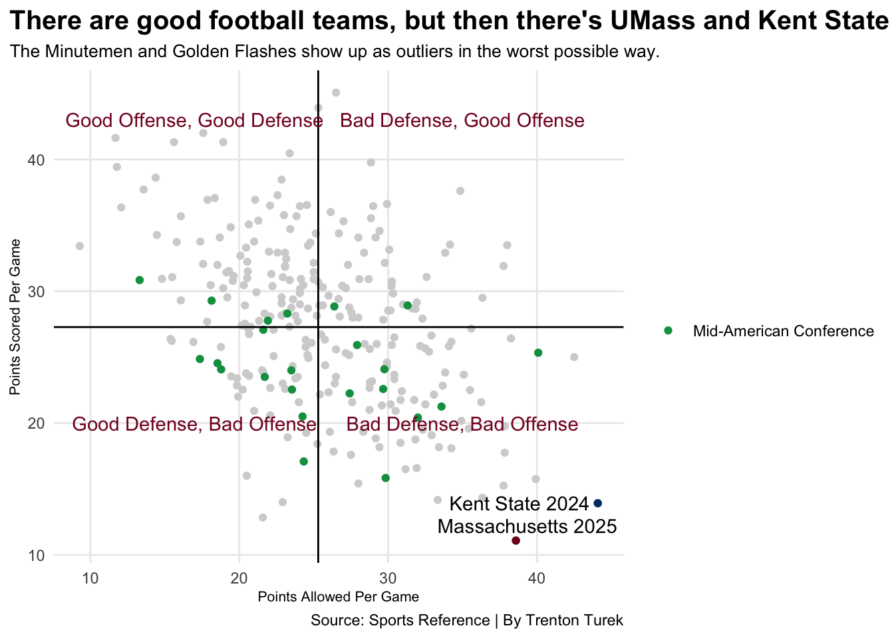
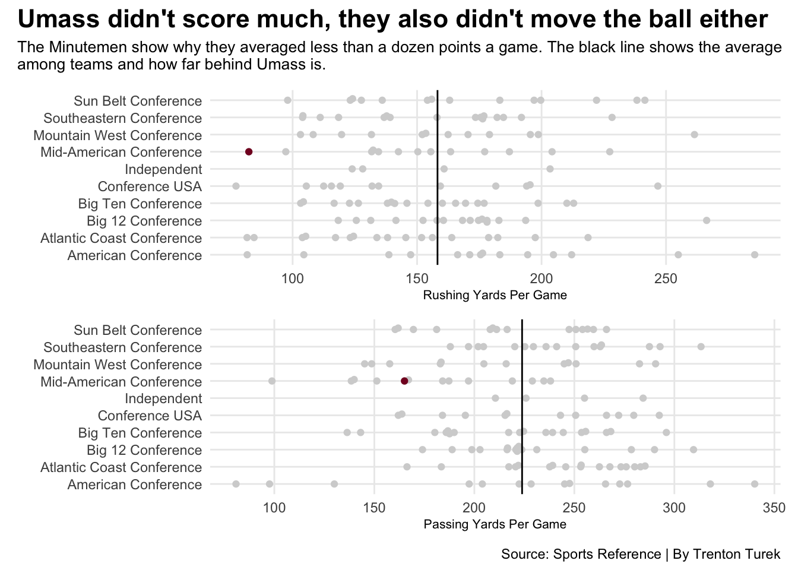

2025 Umass joins an elite group of 0-12 teams in FBS history.
football
college
umass
Author
Trenton Turek
Published
November 13, 2026
Every fall, college football teams across the country gear up with the hope of being able to compete for a national championship. Countless hours of blood sweat and tears poured out by these collegiate athletes to push themselves and their team to be the best. Most of the coverage in college football is zoned in on the Top 25 and especially the teams with the best chance to make the college football playoff. Ohio State, Georgia, Notre Dame, to name a few, all draw the spotlight in for the college football world. This article is not about the teams that are at the top. Indiana has had enough stories about winning their first ever national championship. This article is about going to the mariana trench of football, the bottom of the bottom. Not even ESPN’s bottom 10 will do. We are going to the bottom one. There can only be one team at the very bottom of the 2025 college football season. This article is about the 2025, 0-12 Massachusetts Minutemen.
Nestled in the northeast corner of the United States, the state of Massachusetts provides a beautiful look into life in the new england states. Cape Cod, Fenway Park and Gillette Stadium are just a few of the attractions the state has to offer. However, Amherst, where the University of Massachusetts is located, does not offer much to watch for football. McGuirk Alumni Stadium has seen the Minutemen football team fall time and time again. The stadium itself holds 17,000 but usually only sees about a few thousand per game.
Coming into the 2025 season, Joe Harasymiak was named coach and the program lost many players and coaches in the process. Not a recipe for success when traditionally you are far from a football powerhouse program. This recipe proved itself to not be a success.
Their first game at home to Temple resulted in a 42-10 attack by the Owls. The following week, a close loss 27-26 to Bryant at home would be the closest to victory the Minutemen would see. Losses began to pile up highlighted by a 42-6 defeat at conference foe, Kent State, and ended the season without a single victory. “Why is the loss to Kent State important?”, well the Golden Flashes went 0-12 the previous season in 2024 with a historically bad team. They surrendered 44 points a game on average while scoring only 13 themselves. Umass gave up over 38 points per game and could barely muster to score 11. Not a great place to be.
Code
library(tidyverse)library(ggrepel)library(janitor)library(ggbeeswarm)library(patchwork)set.seed(1234)teams25 <-read_csv("footballlogs25.csv") |>mutate(season =2025, teamseason =paste(team, season))teams24 <-read_csv("footballlogs24.csv") |>clean_names() |>separate(result, into =c("rslt", "score"), sep=" \\(") |>mutate(score=gsub(")", "", score, fixed=TRUE)) |>separate(score, into=c("team_pts", "opponent_pts"), sep="-") |>mutate(team_pts =as.numeric(team_pts), opponent_pts =as.numeric(opponent_pts)) |>mutate(season =2024, teamseason =paste(team, season))teams <-bind_rows(teams25, teams24)score_comparison <- teams |>group_by(team, conference, season, teamseason) |>summarize(average_points_given =mean(opponent_pts),average_points_scored =mean(team_pts) ) mac_score_comparison <- score_comparison |>filter(conference =="Mid-American Conference")u_ass <- score_comparison |>filter(teamseason =="Massachusetts 2025")kentstate <- score_comparison |>filter(teamseason =="Kent State 2024")nebraska <- score_comparison |>filter(teamseason =="Nebraska 2025")ggplot() +geom_point(data=score_comparison, aes(x=average_points_given, y=average_points_scored),color="lightgrey") +geom_point(data=mac_score_comparison, aes(x=average_points_given, y=average_points_scored,color= conference)) +geom_point(data=u_ass, aes(x=average_points_given, y=average_points_scored),color="#840028") +geom_point(data=kentstate, aes(x=average_points_given, y=average_points_scored),color="#003976") +geom_text_repel(data=u_ass, aes(x=average_points_given, y=average_points_scored, label=teamseason) ) +geom_text_repel(data=kentstate, aes(x=average_points_given, y=average_points_scored, label=teamseason) ) +geom_vline(xintercept=25.30428, color="black") +geom_hline(yintercept=27.28, color="black") +geom_text(aes(x=17, y=43, label="Good Offense, Good Defense"), color="#840028") +geom_text(aes(x=35, y=43, label="Bad Defense, Good Offense"), color="#840028") +geom_text(aes(x=35, y=20, label="Bad Defense, Bad Offense"), color="#840028") +geom_text(aes(x=17, y=20, label="Good Defense, Bad Offense"), color="#840028") +scale_color_manual(name="",values =c("#019E4F")) +labs(x="Points Allowed Per Game", y="Points Scored Per Game", title="There are good football teams, but then there's UMass and Kent State", subtitle="The Minutemen and Golden Flashes show up as outliers in the worst possible way.", caption="Source: Sports Reference | By Trenton Turek" ) +theme_minimal() +theme(plot.title =element_text(size =15, face ="bold"),axis.title =element_text(size =8), plot.subtitle =element_text(size=10), panel.grid.minor =element_blank(),plot.title.position ="plot" )

With an offense that was only barely getting into double digits on the scoring column, it might raise the question, how bad were they at moving the ball? At the beginning of the article a warning label should have been posted saying, “reading this further may cause side effects of vomiting, light-headiness, and extreme amounts of disgust.” Proceed at your own discretion.
Unfortunately for the Fighting Minutemen, they were way behind the college football average of 158 rushing yards per game and 223 passing yards. Umass averaged 82 yards on the ground per game and 165 through the air. Yikes.
Code
teams25_pergame_rushing <- teams25 |>group_by(team, conference, season, teamseason) |>summarize(rushing_yds_pergame =mean(rushing_yds), ) teams25_pergame_passing <- teams25 |>group_by(team, conference, season, teamseason) |>summarize(passing_yds_pergame =mean(passing_yds) ) umass_rushing_pergame <- teams25_pergame_rushing |>filter(teamseason =="Massachusetts 2025")umass_passing_pergame <- teams25_pergame_passing |>filter(teamseason =="Massachusetts 2025")bar1 <-ggplot() +geom_beeswarm(data=teams25_pergame_rushing, aes(y=conference, x=rushing_yds_pergame), color="lightgrey") +geom_beeswarm(data=umass_rushing_pergame, aes(y=conference, x=rushing_yds_pergame, color=team)) +geom_vline(xintercept=158.1974, color="black") +scale_color_manual(values=c("#840028")) +labs(x="Rushing Yards Per Game", y="" ) +theme_minimal() +theme(legend.position ="none" ) bar2 <-ggplot() +geom_beeswarm(data=teams25_pergame_passing, aes(y=conference, x=passing_yds_pergame), color="lightgrey") +geom_beeswarm(data=umass_passing_pergame, aes(y=conference, x=passing_yds_pergame, color=team)) +geom_vline(xintercept=223.8723, color="black") +scale_color_manual(values=c("#840028")) +labs(x="Passing Yards Per Game", y="" ) +theme_minimal() +theme(legend.position ="none" )bar1 / bar2 +plot_annotation(title="Umass didn't score much, they also didn't move the ball either", subtitle="The Minutemen show why they averaged less than a dozen points a game. The black line shows the average \namong teams and how far behind Umass is. ",caption="Source: Sports Reference | By Trenton Turek" ) &theme(plot.title =element_text(size =16, face ="bold"),axis.title =element_text(size =8), plot.subtitle =element_text(size=10), panel.grid.minor =element_blank(), )

Every college football fanbase will harp on penalties and turnovers for the reasons why a loss occurred. Is this the case for Umass? Could the secret to bad football teams come down to turning the ball over and penalties? Surprisingly, the Minutemen weren’t an outlier in either of these categories as one might think. Umass had 16 turnovers and 62 penalties on the season. For comparison, 16-0 Indiana had 8 turnovers paired with 60 penalties, and won the national championship. What about the outliers for penalties and turnovers, how did those teams fair in the 2025 season? The FBS team with the most penalties last season was the Miami Hurricanes 112 penalties, and keep in mind not only made the college football playoff but was in the championship against Indiana. Florida Atlantic takes the #1 spot for most turnovers with 29 on the season and even they had four wins.
After all these findings, it’s safe to say that 2025 Umass was really that bad. Even despite not being terrible in the penalties and turnover section. The Minutemen leave their mark in college football history becoming only the 18th team to go 0-12 in the FBS. Despite hitting rock bottom in 2025, the Minutemen started off the 2026 campaign with an upset of Rutgers, allowing someone else to compete for 2026’s bottom one.